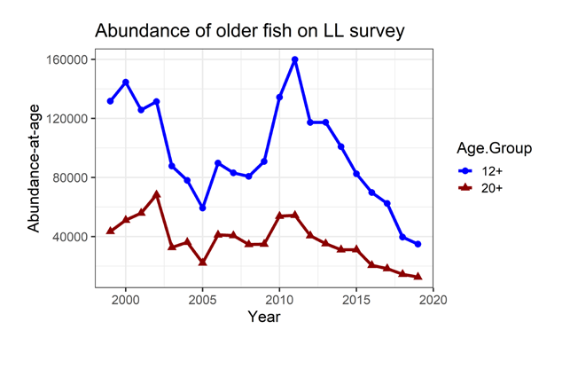

Sablefish stock dominated by small fish

Relative population numbers of fish age-12 and above (blue circles) and age-20 and aboce (red triangles) caught on the AFSC longline survey during 1999 – 2019. Figure 3.25b 2020 sablefish stock assessment